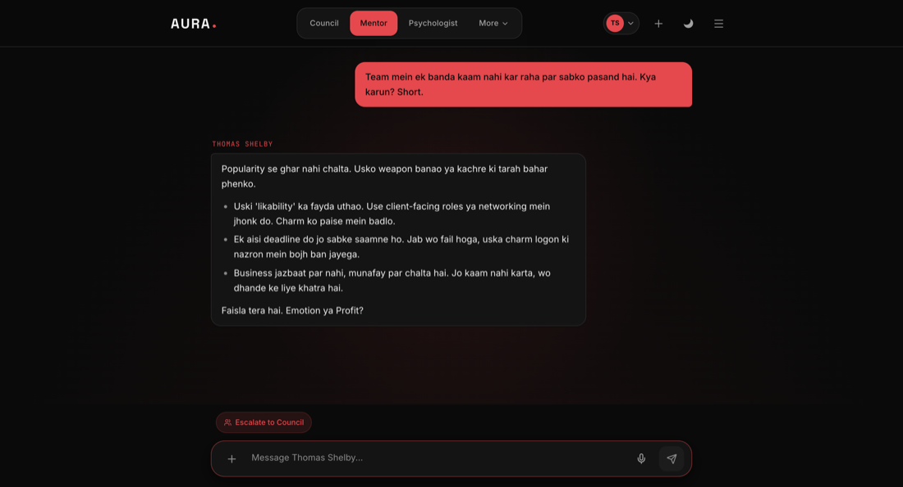
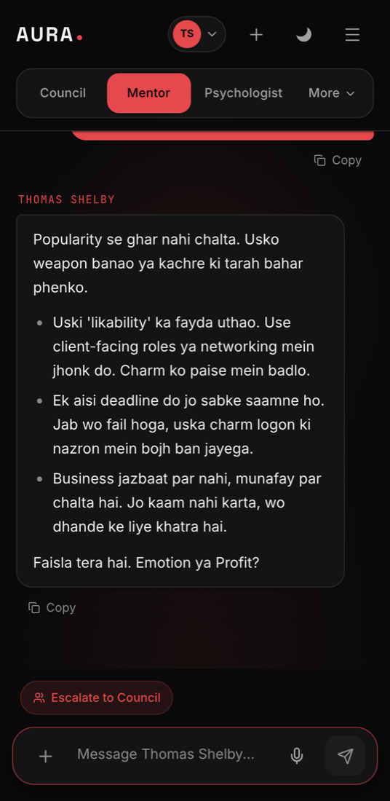

The Mentor
Pick who is sitting across the table. The advice arrives in their voice, with their conviction and their blind spots — which is the point.
The same room, either way.
These are screenshots of The Mentor running, not mock-ups drawn to look like it.


Nineteen people to choose from
Operators like Thomas Shelby, Harvey Specter and Gustavo Fring. Strategists like Ayanokoji, Itachi and Johan Liebert. And three books that outlasted their authors — Chanakya, Sun Tzu, Machiavelli. Each answers as themselves, not as a neutral assistant wearing a name.
Why a biased advisor is useful
A neutral answer hedges. A character does not: they have a worldview, and that worldview cuts the problem a particular way. Ask two of them the same question and the gap between the answers is often more useful than either answer alone.
Switching is instant
The mentor sits in the header as a small avatar. Change it mid-thread and the next reply comes from the new voice, with the conversation intact.
Three ways in.
- “Main daar raha hoon. Aap hote to kya karte?”
- “How do I ask for double and not sound greedy?”
- “Mujhe lagta hai log mujhe seriously nahi lete. Kya galat kar raha hoon?”